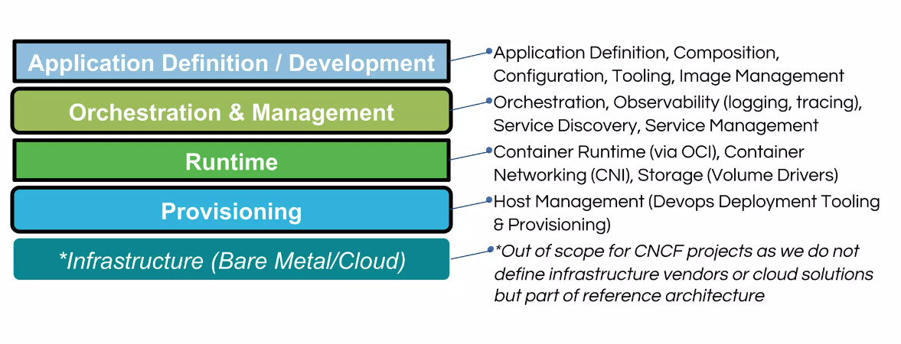
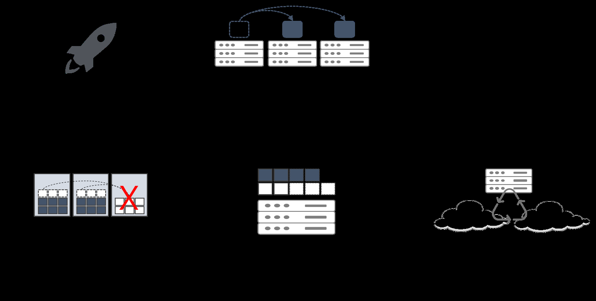
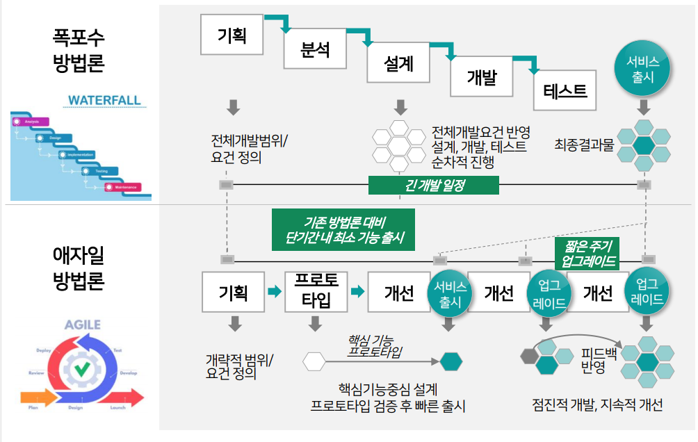
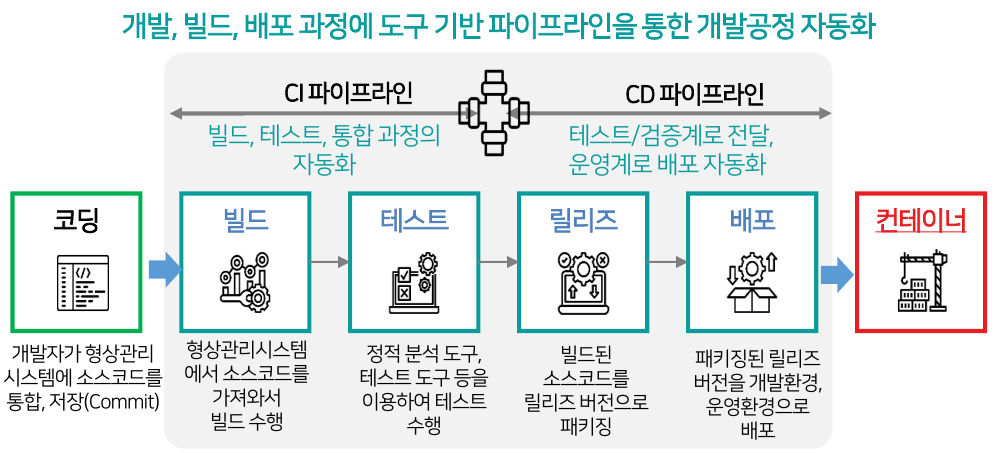

클라우드 네이티브 이론
— 왜 쓰고, 어디에 적용하고, 어떻게 만들어지는가
클라우드가 왜 등장했는지에서 출발해, 서비스 모델(IaaS/PaaS/SaaS)의 통제 구조, 그리고 클라우드 네이티브 애플리케이션이 실제로 어떤 원리로 동작하는지까지 하나의 흐름으로 연결해서 정리합니다.
이 강의를 보는 순서
- 왜 클라우드인가 — 온프레미스의 한계와 클라우드가 해결한 문제, 그리고 지금의 트렌드
- 클라우드를 어떻게 나눠 쓰는가 — 통제권(control)을 기준으로 한 IaaS/PaaS/SaaS, 그리고 배포 형태(Public/Private/Hybrid/Multi)
- 클라우드 위에서 앱을 어떻게 만드는가 — 클라우드의 이점을 실제로 뽑아내는 설계 방식: MSA, Container, DevOps, CI/CD
왜 클라우드인가
클라우드는 갑자기 나온 유행이 아니라, "서버를 직접 사서 운영하는 방식"이 감당하기 어려워진 문제들을 순서대로 해결하며 발전해 온 결과입니다.
01 · Cloud란 무엇인가
클라우드 컴퓨팅은 네트워크 기반의 컴퓨팅 기술로, 컴퓨팅 리소스를 데이터센터에 대량으로 집적시킨 후 개별 이용자가 요구하는 만큼 가상으로 분리하여 정보통신망을 통해 제공하는 서비스입니다. 사용량에 비례하여 비용이 청구된다는 점이 핵심입니다.
직접 서버를 사서 운영하면 ① 트래픽이 몰릴 때를 대비해 항상 여유 자원을 미리 사둬야 하고(과잉 투자), ② 트래픽이 없을 때도 그 서버 비용을 그대로 부담해야 하며(자원 낭비), ③ 장애·보안·전력·냉각까지 직접 관리해야 합니다. 클라우드는 이 리소스를 데이터센터 단위로 모아놓고 "필요한 만큼만 임대"하는 구조로 바꿔, 초기 투자 없이 사용한 만큼만 지불하도록 문제를 해결합니다.
트래픽 예측이 어려운 스타트업 서비스, 특정 시즌에만 폭증하는 이커머스/공연 예매, 여러 국가로 동시에 서비스를 확장해야 하는 글로벌 서비스처럼 수요가 변동하거나 초기 자본이 부족한 상황에서 특히 유리합니다.
물리 서버를 가상화 기술로 잘게 쪼개어(가상머신·컨테이너 단위) 여러 이용자에게 동시에 나눠줄 수 있기 때문입니다. 이 덕분에 이용자는 "리소스 풀"에서 필요한 만큼만 할당받고, 다 쓰면 반납할 수 있습니다. 아래 5대 특징이 이를 가능하게 하는 조건입니다.
클라우드 5대 특징
- 주문형 셀프서비스
- On-demand self-service — 사람 개입 없이 필요할 때 바로 리소스를 받는다
- 광범위한 네트워크 접속
- Broad network access — 표준 인터넷망으로 어디서나 접근 가능
- 리소스 공유
- Resource pooling — 여러 이용자가 물리 자원을 나눠 쓴다(멀티테넌시)
- 신속한 확장성
- Rapid elasticity — 수요에 맞춰 자동으로 늘렸다 줄였다 한다
- 측정 가능한 서비스
- Measured service — 사용량을 계량해 과금 근거로 삼는다
02 · 발전 과정 3세대
클라우드는 "가상화 → 관리 자동화 → 애플리케이션 개발 방식 자체의 변화"라는 순서로 확산되었습니다. 즉 처음에는 인프라를 빌려 쓰는 문제를 풀었고, 그 다음에는 그 위에서 앱을 어떻게 잘 굴릴지의 문제로 넘어간 것입니다.
| 세대 | 상태 | 핵심 흐름 |
|---|---|---|
| 1세대 시장 생성 | 가상화 → IaaS → PaaS(오픈소스) | 물리서버 → VM/AMI → 빌드팩/VM가든/컨테이너로 배포 단위가 점점 가벼워짐 |
| 2세대 시장 성장 | 컨테이너 → 클라우드 네이티브 | 컨테이너가 표준 배포 단위가 되며 "클라우드에 맞춘 애플리케이션 설계"라는 개념 등장 |
| 3세대 진행 중 | Edge, AI/ML, 멀티·하이브리드, 오픈소스 플랫폼 | 클라우드가 데이터센터를 넘어 엣지·AI 워크로드까지 확장 |
클라우드는 처음엔 "서버를 어떻게 빌려 쓸까"라는 문제만 풀었다가(1세대), 그다음엔 "빌린 자원 위에서 앱을 어떻게 잘 굴릴까"로 넘어갔고(2세대), 지금은 데이터센터 바깥의 엣지·AI 워크로드까지 클라우드의 범위 자체가 넓어지는 중(3세대)이라는 뜻입니다.
1세대의 대표적 오픈소스 IaaS 프로젝트로 Eucalyptus가 있었습니다 — AWS API와 호환되는 프라이빗 클라우드를 구축할 수 있게 해준 초기 오픈소스로, "직접 데이터센터에 클라우드처럼 리소스 풀을 만든다"는 개념을 실증한 사례입니다.
03 · 2025 클라우드 트렌드 (Gartner)
지금 클라우드 시장이 어디로 가고 있는지를 보면, 앞으로 배울 내용(멀티클라우드, AI 워크로드, 컨테이너 기반 이식성)이 왜 실무에서 중요한지 알 수 있습니다.
클라우드 불만족 증가
2027년까지 조직의 25%가 TCO 증가·설계 복잡성·벤더 종속으로 상당한 불만족을 겪을 전망 → 아키텍처 설계 단계부터 이식성을 고려해야 하는 이유생성형 AI/ML 도입 가속
AI 워크로드 비중이 10%에서 2029년 50% 이상으로 증가멀티클라우드 전략 대중화
2025년 기업의 65% 이상이 채택 전망산업별 특화 클라우드 수요 증가
2028년까지 50% 이상 기업이 산업 맞춤형 클라우드 채택디지털 주권(Digital Sovereignty) 강화
현재 10% 미만 → 2029년 50% 이상클라우드 지속가능성(Sustainability)
탄소중립·에너지효율·ESG가 클라우드 선택 기준에 포함
불만족의 핵심 원인이 "벤더 종속"이라는 점 — 이것이 뒤에서 배우는 MSA, Container가 "이식 가능한 애플리케이션"을 만드는 방향으로 발전해온 이유와 직접 연결됩니다.
04 · 2026년 ICT 기술 동향과 클라우드의 영향력
※ 아래 내용은 원본 강의자료(PPT)에는 없던 부분으로, 학습 시점 기준 최신 산업 동향을 보여주기 위해 외부 자료를 조사해 추가했습니다 — 수치는 출처별로 조사 시점·방법론이 달라 참고용으로만 활용하고, 정확한 값은 하단 출처 링크에서 직접 확인하세요.
이 교육과정에서 배우는 컨테이너·쿠버네티스·클라우드 네이티브는 교과서 속 개념이 아니라, 지금 이 시각 채용 시장에서 요구되는 실무 스킬 그 자체입니다. 아래 지표들은 "왜 하필 이 커리큘럼(컨테이너 → K8s → MSA)을 배우는가"에 대한 산업 차원의 답이기도 합니다.
Gartner 2026 전략 기술 트렌드 Top 10
Gartner는 2026년 전략 기술 트렌드를 The Architect(설계자) · The Synthesist(통합자) · The Vanguard(선도자) 3가지 테마로 묶어 발표했습니다. AI가 더 이상 선택이 아니라 전제가 된 상황에서, 조직이 회복탄력적인 기반을 만들고 지능형 시스템을 조율하며 신뢰를 지키기 위한 트렌드라는 것이 핵심입니다.
| # | 트렌드 | 한 줄 설명 |
|---|---|---|
| 1 | AI 슈퍼컴퓨팅 플랫폼 | CPU·GPU·전용 칩을 결합해 대규모 데이터 워크로드를 더 빠르게 처리 |
| 2 | 멀티에이전트 시스템 | 여러 AI 에이전트가 협업해 복잡한 업무 자동화 |
| 3 | 도메인 특화 언어모델(DSLM) | 산업별 데이터로 학습해 특정 분야 정확도를 높인 AI 모델 |
| 4 | AI 보안 플랫폼 | 데이터 유출 방지, AI 에이전트의 행동 모니터링 |
| 5 | AI 네이티브 개발 플랫폼 | 생성형 AI로 개발 속도를 높이고 대규모 엔지니어링 인력 의존도를 낮춤 |
| 6 | 기밀 컴퓨팅 | 워크로드를 격리된 보안 환경에서 처리해 인프라 제공자로부터도 데이터를 보호 |
| 7 | 피지컬 AI | 로봇·드론·스마트 장비 등 물리적 기기에 내장되는 지능 |
| 8 | 선제적 사이버보안 | 피해가 발생하기 전에 AI로 위협을 예측·차단 |
| 9 | 디지털 출처 증명 | 소프트웨어·AI 생성 콘텐츠의 출처와 무결성을 검증 |
| 10 | 지오퍼트리에이션·소버린 인프라 | 규제 요건에 따라 워크로드를 국가·지역 단위 인프라로 이전 |
10개 중 "AI 슈퍼컴퓨팅 플랫폼", "기밀 컴퓨팅", "지오퍼트리에이션·소버린 인프라" 3가지는 결국 "그 AI를 어느 클라우드/인프라 위에서, 얼마나 안전하고 규제에 맞게 돌릴 것인가"의 문제입니다 — AI 트렌드처럼 보이지만 본질은 이 강의에서 배우는 클라우드·인프라 설계 문제라는 뜻입니다.
클라우드 산업 자체의 성장 지표
미국 IT 지출은 2026년 전년 대비 8.3% 성장한 약 2.9조 달러, 이 중 데이터센터 지출은 전년 대비 31.7% 급증한 6,500억 달러 이상으로 전망됩니다.
국내(한국) 클라우드 시장 전망 — 한국 IDC
클라우드 네이티브 생태계 성숙도 — CNCF 연례 서베이
CNCF(Cloud Native Computing Foundation)가 매년 발표하는 조사 결과가 이 교육과정이 다루는 기술 스택과 정확히 겹칩니다 — 조직의 98%가 클라우드 네이티브 기술을 도입했고, 컨테이너 사용 조직의 82%가 쿠버네티스를 운영(production) 환경에서 사용 중이며, AI를 도입한 조직의 66%가 추론(inference) 워크로드 확장에 쿠버네티스를 사용합니다.
정리하면 — "쿠버네티스가 이제 AI를 돌리는 사실상의 운영체제(OS)가 되었다"는 것이 2026년 업계의 결론입니다. 이 강의에서 배우는 컨테이너·쿠버네티스·Helm은 AI 시대에도 여전히(오히려 더) 핵심 실무 스킬이라는 뜻입니다.
※ 위 막대그래프는 아래 원문 기사·보고서에 보고된 수치를 바탕으로 이 교안 안에서 직접 그린 그림입니다(원문의 그래픽을 그대로 캡처한 것이 아닙니다) — 원본 그래픽과 상세 방법론은 아래 링크에서 확인하세요.
| 출처 | 링크 |
|---|---|
| Gartner — Top Strategic Technology Trends for 2026 | gartner.com |
| Flexera — 2026 State of the Cloud Report (요약: Civo, TechTarget) | civo.com · techtarget.com |
| 한국 IDC — 2026년 국내 클라우드 시장 전망 | datanet.co.kr · greened.kr |
| CNCF — Annual Cloud Native Survey (2025년 조사, 2026년 1월 발표) | cncf.io |
클라우드 서비스 · 배포 모델
"얼마나 직접 관리하고, 얼마나 맡길 것인가"라는 통제권(control) 기준으로 서비스 모델이 나뉘고, "누구와 자원을 공유할 것인가" 기준으로 배포 모델이 나뉩니다.
01 · 서비스 모델 구분 (IaaS / PaaS / SaaS)
서버 하나를 실행하려면 하드웨어 → OS/런타임 → 애플리케이션 순서로 계층이 쌓입니다. 클라우드는 "어느 계층까지를 제공자가 책임지는가"에 따라 서비스 모델을 나눕니다 — 인프라만 빌려주면 IaaS, 실행 플랫폼까지 관리해주면 PaaS, 완성된 소프트웨어를 그대로 쓰게 해주면 SaaS입니다. 아래로 갈수록 이용자가 통제할 수 있는 범위는 좁아지지만, 신경 써야 할 것도 줄어듭니다.
자가용 소유
모든 것을 직접 관리
렌트카
인프라만 대여, 운전(운영)은 직접
택시
플랫폼이 운전, 목적지(코드)만 지정
※ SaaS는 이보다 더 나아가 "버스"에 비유됩니다 — 정해진 노선(기능)을 여러 승객(사용자)이 함께 이용합니다.
IaaS는 인프라 구성을 직접 통제해야 하는 IT 전문가·운영팀에, PaaS는 인프라보다 코드에 집중하고 싶은 SW 개발팀에, SaaS는 도구를 그대로 쓰기만 하면 되는 최종 사용자(예: 협업 툴, 메일)에 적합합니다.
02 · Public / Private / Hybrid / Multi Cloud
이번엔 "어느 인프라를, 누구와 공유하며 쓸 것인가"의 문제입니다.
| 유형 | 설명 | 장점 |
|---|---|---|
| Public | 제공업체 인프라를 사용료 내고 이용 | 비용절감, 유지관리 불필요, 높은 안정성, 확장성 |
| Private | 기업 자체 데이터센터에 구축 | 유연성, 보안 강화, 확장성 |
| Hybrid | On-Premise/Private + Public 결합 | 제어, 유연성, 비용효율, 점진적 마이그레이션 |
| Multi | 복수의 클라우드 서비스 구성 | 벤더 종속 리스크 대응, 최신기술 도입, 가격경쟁력 |
금융·공공기관처럼 민감 데이터는 Private에 두고 일반 트래픽은 Public으로 흘려보내는 Hybrid 구성이 대표적입니다. 여러 SaaS/클라우드 벤더를 섞어 쓰는 Multi Cloud는 위에서 본 "벤더 종속 리스크"에 대한 실무의 직접적인 대응입니다.
03 · IaaS 심화 — 가상화 방식 비교
IaaS는 CSP(클라우드 제공자)가 하드웨어·VM·저장장치·네트워크 등 인프라 자원을 가상화된 서비스로 제공하는 모델입니다. 이 가상화를 구현하는 두 가지 대표 방식이 있습니다.
| 구분 | Hypervisor (서버 가상화) | Container (컨테이너 가상화) |
|---|---|---|
| 방식 | OS 환경 전체를 가상화 | 호스트 OS 커널 공유, 프로세스 격리 |
| 장점 | 가상서버마다 OS 선택 가능, 완전 분리 | 이식성·복제성 우수, 자원 효율적 |
| 단점 | 리소스 소비 많음, 부팅 느림 | 커널 공유로 이미지 호환성 제약, 호스트 침해 시 위험 노출 가능 |
완전한 격리와 독립적인 OS가 필요하면 Hypervisor(VM)를, 빠른 배포와 자원 효율이 중요하면 Container를 선택합니다. 이 트레이드오프가 바로 Part Ⅲ의 클라우드 네이티브가 "왜 컨테이너를 기본 단위로 삼는지"의 출발점입니다.
Hypervisor 방식은 건물을 통째로 새로 지어 완전히 독립된 내 집을 마련하는 것에 가깝고, Container 방식은 이미 있는 건물(호스트 OS) 안에 벽만 나눠 여러 사무실을 쓰는 것에 가깝습니다. 그래서 Container가 더 가볍고 빠르게 뜨지만, 건물(커널)에 문제가 생기면 그 안의 모든 사무실이 함께 영향을 받을 수 있습니다.
04 · PaaS
IaaS와 SaaS의 중간 계층으로, 프로그래밍 언어·개발환경을 포함한 플랫폼을 제공해 사용자가 앱을 배포·관리·실행할 수 있게 합니다. 개발자는 서버 관리 대신 코딩에만 집중할 수 있고, DevOps 문화를 적용하기도 쉬워집니다.
05 · SaaS 성숙도
SaaS는 CSP가 애플리케이션 자체를 가상화된 서비스로 제공하는 모델로, 확장성(Scalability)·맞춤화(Configuration)·다중사용자 지원(Multi-Tenancy) 3대 요소를 갖춰야 합니다.
SaaS 6대 특징
- 수시로 최신 버전을 사용 — 별도 업데이트·버전업이 필요 없음
- 데이터가 클라우드에 저장되어 보안성·접근성이 우수함
- 설치 없이 인터넷 접속만으로 바로 사용 가능
- 사용 기간만큼 지불하는 구독형 비용으로 안정적
- 이용 규모·기간이 고정적이지 않아 단기간·소수 계정도 가능
- 클라우드 공급자가 대신 관리해줘 유지관리 비용이 없음
| 레벨 | 특징 |
|---|---|
| Lv1 | Custom Tenant — 고객마다 별도 커스텀(ASP형) |
| Lv2 | Single Tenant — 고객마다 독립된 인스턴스 |
| Lv3 | Multi Tenant — 하나의 인스턴스를 여러 고객이 공유 |
| Lv4 | Scalable Multi Tenant — 부하분산까지 지원 |
Lv1은 손님마다 옷을 하나하나 맞춤 제작해주는 것에 가깝고, Lv2는 손님마다 방을 따로 하나씩 내주는 것입니다. Lv3~4로 갈수록 하나의 큰 건물을 여러 손님이 함께 쓰면서도, 손님이 몰리면 건물(자원)을 자동으로 늘려주는 방식에 가까워집니다.
Cloud Native Application
지금까지는 "클라우드를 어떻게 빌려 쓰는가"였다면, 이제부터는 "클라우드의 이점을 실제로 뽑아내려면 애플리케이션을 어떻게 설계해야 하는가"입니다.
01 · 정의와 아키텍처
클라우드 네이티브(CNCF 정의)는 퍼블릭·프라이빗·하이브리드 클라우드 환경에서 클라우드의 이점을 최대로 활용하도록 애플리케이션을 구축·실행하는 방식입니다. 전형적 접근은 컨테이너, 서비스 메시, 마이크로서비스, 불변 인프라스트럭처, 선언적 API입니다.
클라우드 네이티브 방식으로 앱을 만든다는 것은 — 앱을 작은 조각(마이크로서비스)으로 나누고, 그 조각들을 가벼운 상자(컨테이너)에 담아 배포하고, 조각끼리 대화하는 통신 규칙을 표준화하고(서비스 메시), 서버를 고쳐 쓰는 대신 통째로 새로 교체하며(불변 인프라스트럭처), "어떻게 해라"가 아니라 "이런 상태가 되게 해달라"고 선언만 하면 나머지는 시스템이 알아서 맞춰주는(선언적 API) 방식으로 만든다는 뜻입니다.
전통적 애플리케이션은 장기적 안정성을 중시해 강결합된 단일(Monolithic) 구조로 만들어집니다. 문제는, 클라우드가 제공하는 "신속한 확장성"·"주문형 셀프서비스"를 살리려면 애플리케이션도 그만큼 빠르게 늘어나고 줄어들고 배포될 수 있어야 하는데, 강결합 구조는 일부만 고쳐도 전체를 다시 빌드·배포해야 해서 이 속도를 따라갈 수 없습니다.
발전 과정 — 기존 방식의 어떤 문제를 넘어서기 위해 등장했는가
클라우드 네이티브는 기존 애플리케이션 개발 방식의 한계를 하나씩 넘어서기 위해 등장했습니다. 아래 6가지 도입 동기는 각각 특정 문제 상황에 대한 답입니다.
| 도입 동기 | 기존 방식에서 겪던 문제 |
|---|---|
| 민첩성 | 배포·테스트가 길고 느려 변경 하나에도 지연이 컸음 |
| 이식성 | 환경이 바뀔 때마다 프로그램을 다시 설치해야 했음 |
| 확장성 | 트래픽이 몰리면 시스템 전체가 폭주하기 쉬웠음 |
| 표준성 | 팀·서버마다 실행 환경이 제각각이라 관리가 복잡했음 |
| 협력성 | 역할별 팀이 분리되어 있어 소통·협업이 어려웠음 |
| 경제성 | 여유 자원을 미리 사둬야 해서 비용이 높았음 |

| 구분 | 전통적 | 클라우드 네이티브 |
|---|---|---|
| 핵심 | 장기적 안정성 | 민첩성(speed to market) |
| 개발방법 | 폭포수형 | 애자일 |
| 팀구성 | 역할별 별도 팀 | DevOps 방식 |
| 배포주기 | 길고 간헐적 | 짧고 지속적(CI/CD) |
| 아키텍처 | 강결합 단일(Monolithic) | 느슨결합 분산(MSA)/API 통신 |
| 인프라 | 서버 중심, OS 종속, 온프레미스 | 컨테이너 중심, OS 종속성 제거 |
| 확장 | 수직확장(스케일업) | 수평확장(스케일아웃), 자동조정 |

트래픽 증가 시 대응 방식을 비교하면 체감이 됩니다 — 전통적 방식은 서버 전체를 증설해야 하지만, 클라우드 네이티브 방식은 트래픽이 몰리는 특정 컨테이너(서비스)만 골라 확장합니다. 신기능 배포도 마찬가지로, 문제가 생긴 서비스 하나만 롤백하면 되어 전체 서비스 중단 없이 운영할 수 있습니다.
02 · 12 Factor App
클라우드 네이티브 애플리케이션을 만들 때 지켜야 할 12가지 개발 원칙입니다. 요약하면 "코드와 설정을 분리하고, 프로세스를 무상태로 만들어, 언제든 새 인스턴스를 늘리거나 없앨 수 있게 하라"는 것입니다.
이 12가지 규칙을 한 마디로 하면 "앱을 언제든 복제하거나 없애도 아무 문제 없는, 이사하기 쉬운 상태로 만들어라"는 뜻입니다. 예를 들어 설정 값을 코드 안에 박아 넣지 않고 환경(environment)으로 분리해두면, 같은 코드를 개발 환경이든 운영 환경이든 설정만 바꿔 끼워서 그대로 돌릴 수 있습니다.
프로세스가 상태(state, 예: 세션정보)를 자기 안에 갖고 있으면, 그 인스턴스가 죽었을 때 상태도 함께 사라지고, 여러 인스턴스로 확장(수평 확장)할 때도 어느 인스턴스로 요청이 가야 할지 문제가 생깁니다. 상태를 외부 저장소(DB, 캐시)로 빼두면 어떤 인스턴스가 죽거나 새로 늘어도 문제 없이 대체될 수 있습니다 — 이것이 "9. 폐기 가능"과 "8. 동시성"을 가능하게 하는 전제 조건입니다.
03 · Microservice Architecture (MSA)
독립적으로 실행/배치될 수 있는 작은 모듈로 기능을 분해하는 아키텍처입니다. 서비스 간 연결은 API를 이용합니다.
MSA는 큰 식당 하나를 통째로 운영하는 대신, 접수 담당·조리 담당·배달 담당을 각각 독립된 가게처럼 따로 차려놓고 필요할 때만 서로 주문을 주고받게 하는 것에 가깝습니다. 접수 가게(사용자관리)에 문제가 생겨도 조리 가게(상품관리)는 멀쩡히 돌아가고, 손님이 몰리는 배달 가게(주문관리)만 따로 더 키울 수 있습니다.
모놀리식 구조에서는 "주문" 기능 하나만 고쳐도 전체 애플리케이션을 다시 빌드·테스트·배포해야 합니다. 트래픽이 몰리는 것도 특정 기능(예: 결제)뿐인데 서버 전체를 확장해야 하죠. MSA는 기능 단위로 서비스를 쪼개서, 고치는 범위와 확장하는 범위를 그 기능 하나로 좁힙니다.
마틴 파울러의 4가지 기본 원리 — One Thing(한 기능에 집중), Small(최소 단위로 독립 배포), API(API로 연계), Autonomous(자율적인 팀이 개발·운영).
사용자관리 / 상품관리 / 주문관리라는 3개의 독립 서비스가 REST API로 연계되어 하나의 "주문" 기능을 완성하는 예시입니다.
각 화살표는 REST API 호출 — 예: PUT /user/admin
이 코드가 하는 일을 한 줄로 요약하면: "admin"이라는 사용자의 정보를 서버에 보내 등록/수정해달라고 요청하고(PUT /user/admin), 서버가 처리에 성공했다는 응답을 돌려주는 예시입니다.
REST API — 자원(URI) + 행위(Method) + 표현(JSON 등)
| Method | 의미 |
|---|---|
POST | Create |
GET | Read |
PUT | Update |
DELETE | Delete |
# 요청 예시
PUT /user/admin
{"userId":"admin","username":"어드민"}
# 응답 예시
{"status":"SUCCESS", ...}예시 화면 · 참고용 실제 호스트명·응답 필드는 구현마다 다르며, 이 화면은 위 REST API 예시가 터미널에서 어떻게 호출되는지를 보여주기 위한 일반적인 예시다.
장점 — 유연한 확장, 출시시간 단축, 빠르고 유연한 조직문화 기여, 신기술 수용력, 개발자 생산성, 복구능력.
단점 — 개발/운영 복잡성, 통합테스트 어려움, 디버깅 어려움, 트랜잭션 처리 어려움, 배포 자동화 필요, 중복성(서비스마다 공통 기능을 각자 구현해야 하는 경우가 생김).
이 "복잡성"이라는 단점을 다루기 위해 다음 단원의 컨테이너 오케스트레이션과 CI/CD 자동화가 필요해집니다.
04 · Container & Orchestration
컨테이너는 애플리케이션 실행에 필요한 파일을 모은 독립 실행 패키지로, 클라우드 네이티브의 최소 배포 단위입니다.
MSA로 서비스를 쪼개면 배포해야 할 단위 수가 수십~수백 개로 늘어납니다. 각 서비스를 컨테이너로 패키징하면 "이 서비스가 필요로 하는 실행 환경"을 통째로 이미지화할 수 있어, 어떤 서버에 올려도 동일하게 동작합니다(이식성). 이 수많은 컨테이너를 사람이 일일이 켜고 끄고 배치할 수 없기 때문에 오케스트레이션이 필요합니다.
Orchestration은 컨테이너의 프로비저닝·배포·네트워킹·확장·라이프사이클 관리를 자동화합니다. 대표 도구: Kubernetes, Docker Swarm, Apache Mesos.
동작 3단계: 구성설정(.yaml) → 컨테이너 배포 → 수명주기 관리
예시 화면 · 참고용 실제 파드 이름·시간은 클러스터마다 다르며, 이 화면은 "구성설정 → 배포 → 수명주기 관리" 3단계가 명령으로 어떻게 이어지는지 보여주기 위한 일반적인 예시다(세부 실습은 2강 Container 기술, K8S 강의에서 다룸).
"오케스트레이션"이라는 이름 그대로, 오케스트라 지휘자가 여러 연주자를 보며 언제 어떤 파트를 연주하고 멈출지 지휘하듯이, Kubernetes 같은 도구가 수많은 컨테이너를 보며 언제 띄우고, 언제 늘리고, 문제가 생기면 언제 다시 살릴지를 자동으로 지휘합니다.
05 · DevOps
개발(Dev)과 운영(Ops)의 통합·자동화를 통해 신속한 서비스 제공을 지원하는 프로세스·도구·조직문화입니다.

폭포수 방식에서는 개발팀이 만든 결과물을 운영팀이 넘겨받아 배포하는 과정에서 "우리 환경에선 됐는데 운영에선 안 된다"는 책임 소재 다툼과 지연이 반복됩니다. DevOps는 두 역할을 한 팀의 연속된 흐름으로 묶어, MSA로 잘게 쪼개진 서비스를 짧은 주기로 안전하게 배포할 수 있게 합니다.
DevOps 도입 효과
06 · CI/CD
- CI(지속적 통합) — 코드 변경사항을 빌드/테스트 후 공유 리포지토리에 통합
- CD(지속적 제공) — 테스트 후 리포지토리에 자동 업로드
- CD(지속적 배포) — 리포지토리에서 운영환경까지 자동 릴리즈
헷갈리기 쉬운 부분은 "CD"가 두 가지 뜻으로 쓰인다는 점입니다 — 지속적 제공(Delivery)은 "언제든 배포할 수 있는 상태로 포장해서 창고(리포지토리)에 쌓아두는 것"까지고, 지속적 배포(Deployment)는 거기서 한 걸음 더 나아가 "사람 승인 없이 그 창고에서 바로 운영 서버까지 자동으로 실어 나르는 것"입니다. 즉 CI가 "재료 손질과 검수", CD(제공)가 "포장해서 창고 대기", CD(배포)가 "그대로 매장 진열"에 해당합니다.

클라우드(Part Ⅰ)가 자원을 탄력적으로 빌려주는 기반을 만들고, 서비스 모델(Part Ⅱ)이 그 자원을 어느 수준까지 관리할지 정하고 나면, 그 위에서 MSA·컨테이너·DevOps·CI/CD(Part Ⅲ)가 맞물려 "작은 단위로 자주, 안전하게 배포"라는 클라우드 네이티브의 목표를 실현합니다.
중요 용어 사전
- CNCF
- Cloud Native Computing Foundation
- Multi-Tenancy
- 하나의 앱을 여러 사용자(Tenant)가 공유하는 아키텍처
- Hypervisor
- 물리서버 OS 환경 전체를 가상화하는 계층
- MSA
- MicroService Architecture
- Monolithic
- 강결합 단일 애플리케이션 아키텍처
- API Gateway
- MSA에서 요청을 각 마이크로서비스로 라우팅하는 진입점
- OCI
- Open Container Initiative, 컨테이너 실행 표준
- CNI
- Container Networking Interface, 컨테이너 네트워킹 표준
- Observability
- 시스템 상태를 모니터링/추적하는 능력
정리 & 다음 강의 연결
클라우드는 "자원을 나눠 빌려주는 것"에서 시작해, 서비스 모델로 "얼마나 관리해줄지"를 나누고, 결국 MSA + Container + DevOps + CI/CD라는 조합으로 애플리케이션 자체의 설계 방식을 바꿔왔습니다.
다음 강의(2강 · Container 기술)에서는 이번 강의에서 "왜 필요한지"만 짚고 넘어간 컨테이너를, 실제로 어떻게 만들고 실행하는지(이미지, 레이어, 런타임) 원리 수준에서 다룹니다.